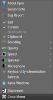
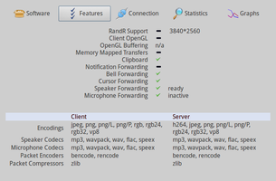
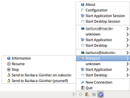
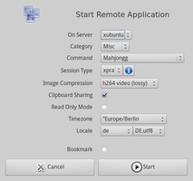
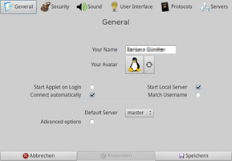

Xpra
Dieser Artikel wurde für die folgenden Ubuntu-Versionen getestet:
Ubuntu 16.04 Xenial Xerus
Ubuntu 14.04 Trusty Tahr
Zum Verständnis dieses Artikels sind folgende Seiten hilfreich:
Xpra  (X Persistent Remote Applications) ist eine Art "Screen für X11", mit dem grafische Programme im Netzwerk genutzt werden können. Zusätzlich kann die Verbindung unterbrochen und später vom gleichen oder einem anderen Rechner aus fortgesetzt werden, ohne dass das jeweilige Programm beendet wird. Eine Alternative für (nichtgrafische) Kommandozeilenprogramme ist Mosh.
(X Persistent Remote Applications) ist eine Art "Screen für X11", mit dem grafische Programme im Netzwerk genutzt werden können. Zusätzlich kann die Verbindung unterbrochen und später vom gleichen oder einem anderen Rechner aus fortgesetzt werden, ohne dass das jeweilige Programm beendet wird. Eine Alternative für (nichtgrafische) Kommandozeilenprogramme ist Mosh.
So ist es z.B. möglich, bestimmte nur auf anderen Rechnern vorhandene Programme zu nutzen, ohne diese lokal installieren zu müssen. Xpra arbeitet grundsätzlich mit "seamless windows", also der Integration eines Programmfensters in den vorhandenen Desktop (in Gegensatz zu VNC, das Programme entfernter Rechner innerhalb eines eigenen Fensters darstellt).
Xpra nicht auf Linux beschränkt. So können beispielsweise Linux-Programme auf dem Windows- oder Mac-OS-X-Desktop angezeigt werden oder (mit Einschränkungen) auch umgekehrt. Es ist für langsame Verbindungen optimiert und bietet gegenüber SSH-X-Forwarding-Verbindungen den Vorteil, dass Verbindungen wieder aufgenommen werden können, ohne dass die ursprüngliche Anwendung geschlossen wird.
Mit Window Switch (ehemals Window Shifter) existiert eine grafische Oberfläche für Xpra, die weiter unten kurz beschrieben ist. Es unterstützt neben Xpra noch weitere Netzwerk-Fernwartungsprotokolle wie VNC, NX und RDP (Windows-Rechner). Ähnlich ist X2Go, das ebenfalls einzelne Programme entfernter Rechner ausführen kann. Der Unterschied zu Xpra besteht in der Möglichkeit, nicht nur einzelne Programme, sondern einen kompletten Desktop über das Netzwerk zu nutzen (als eigene Sitzung, nicht als geteilte wie bei VNC).
Installation¶
 Das Programm ist in den offiziellen Paketquellen enthalten. Folgendes Paket muss auf den beteiligten Rechnern installiert werden [1]:
Das Programm ist in den offiziellen Paketquellen enthalten. Folgendes Paket muss auf den beteiligten Rechnern installiert werden [1]:
xpra (universe)
 mit apturl
mit apturl
Paketliste zum Kopieren:
sudo apt-get install xpra
sudo aptitude install xpra
Fehlende Abhängigkeiten wie ein SSH-Server werden automatisch nachinstalliert. Möchte man Winswitch einsetzen, wird folgendes Paket benötigt:
winswitch (universe, optional, grafische Oberfläche, ab Ubuntu 14.04)
mit apturl
Paketliste zum Kopieren:
sudo apt-get install winswitch
sudo aptitude install winswitch
Fremdquelle¶
Aktuelle Versionen können über eine Fremdquelle bezogen werden. Zuerst authentifiziert man diese.
Um die Fremdquelle zu authentifizieren, kann man
entweder den Signierungsschlüssel herunterladen  und in der Paketverwaltung hinzufügen oder folgenden Befehl ausführen:
und in der Paketverwaltung hinzufügen oder folgenden Befehl ausführen:
wget -q http://winswitch.org/gpg.asc -O- | sudo apt-key add -
Anschließend wird die Fremdquelle hinzugefügt.
Um aus der Fremdquelle zu installieren, muss man die folgenden Paketquellen freischalten:
Hinweis!
Zusätzliche Fremdquellen können das System gefährden.
deb http://winswitch.org/ VERSION main
Nach dem Aktualisieren der Paketquellen erfolgt die Installation wie oben angegeben.
Verwendung¶
Xpra kann auf der Kommandozeile benutzt werden. Zunächst ein einfaches Beispiel [3], um auf dem entfernten Rechner die Anwendung xterm zu starten, deren Fenster auf dem eigenen Desktop angezeigt wird:
xpra start ssh:BENUTZERNAME@RECHNERNAME:100 --start-child=xterm
Nun kann man bereits beliebige grafische Anwendungen des entfernten Rechners durch die Eingabe des Programmnamens in xterm aufrufen, die als Fenster auf dem eigenen Desktop erscheinen. Die eigentliche Verbindung kann mit
Strg +
C jederzeit unterbrochen und später – auf Wunsch auch von einem anderen Rechner aus – fortgesetzt werden:
xpra attach ssh:BENUTZERNAME@RECHNERNAME:100
Während einer bestehenden Verbindung liefert ein kleines Symbol im Panel weitere Informationen zum Status und der Auslastung der Verbindung. Endgültig beendet wird die Übertragung mit folgendem Befehl:
ssh BENUTZERNAME@RECHNERNAME xpra stop :100
BENUTZERNAME@RECHNERNAME's password: ******** server requested disconnect: server shutdown xpra at :100 has exited.
Der versteckte Ordner ~/.xpra/ im Homeverzeichnis dient als temporärer Speicherort.
|  |
| Xpra Panel-Applet |
|  |
| Sessioninformationen |
Details¶
Besteht eine Terminal-Verbindung zum entfernten Rechner, erfolgt der Verbindungsaufbau in zwei Schritten. Mit Server ist hier der entfernte, mit Client der eigene (lokale) Rechner gemeint. Als Displayport (100) kann auch ein anderer, nicht bereits verwendeter Port eingesetzt werden.
Server¶
Verbindung starten:
xpra start :100 --start-child=PROGRAMMNAME
Verbindung beenden:
xpra stop :100
Window Switch¶
Dieses Programm ruft Xpra bei Bedarf automatisch im Hintergrund auf. Selbst residiert es – nach dem Programmstart [4] über "Internet -> Window Switch" – als kleines Symbol im Benachrichtigungsfeld des Panels. Da es in der Standardeinstellung automatisch nach anderen Rechnern im Netzwerk sucht, erscheint ein kleines Fenster, in dem (einmalig) nur noch das jeweilige Kennwort des Benutzers eingegeben werden muss, auf dem Window Switch ebenfalls gestartet ist.
Nun stehen über das Panel-Applet vielfältige Möglichkeiten zur Verfügung. Unter anderem können Fenster zwischen Rechnern verschoben werden, was sich im ursprünglichen Programmnamen widerspiegelt. Auf der Homepage gibt es dazu ein kleines Video , das diesen Vorgang zwischen Ubuntu und Windows XP demonstriert.
|  |
| Panel-Applet |
|  |
| Entferntes Programm starten |
|  |
| Einstellungen |
Statusinformationen, Protokolle und Einstellungen werden im versteckten Ordner ~/.winswitch/ im Homeverzeichnis gespeichert.
Links¶
Choosing a session type
- Vergleich verschiedener von Winswitch unterstützter NetzwerkprotokolleFensterschubser – X11-Fenster auf andere Displays umleiten
 - iX, 04/2015
- iX, 04/2015Using xpra for fun and profit
- Blogbeitrag, 09/2013xpra howto
- Blogbeitrag, 03/2013
- Erstellt mit Inyoka
-
 2004 – 2017 ubuntuusers.de • Einige Rechte vorbehalten
2004 – 2017 ubuntuusers.de • Einige Rechte vorbehalten
Lizenz • Kontakt • Datenschutz • Impressum • Serverstatus -
Serverhousing gespendet von